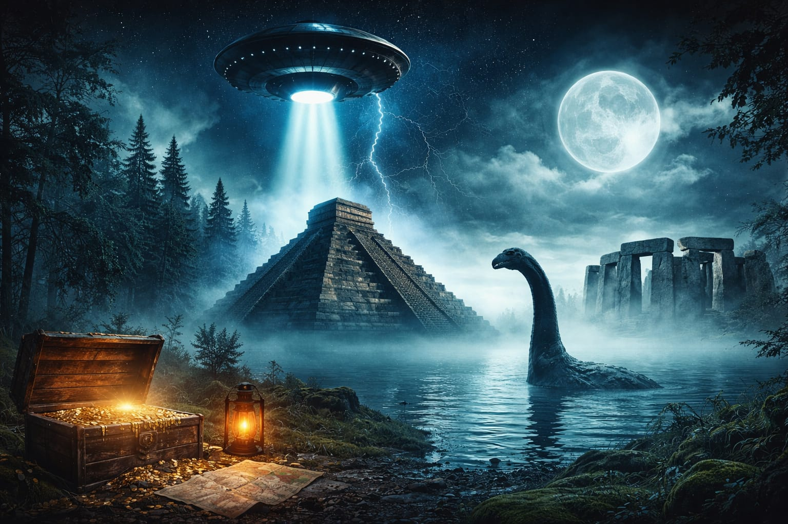

You have arrived here to explore the mysteries of the world—phenomena that have not yet been fully explained. From strange events in history and unexplored places to questions that even scientists have not completely answered, you will encounter them all here. Through the articles and information below, you can dive deeper into this fascinating world of mysteries and expand your understanding of the unknown. We hope that what you discover here will inspire you to think about new ideas, broaden your knowledge of the world, and encourage your curiosity to keep exploring. If you found this information helpful, please use the link below to visit our YouTube channel. Subscribe and support us to help us continue creating more content like this.
What are the details you are expecting?